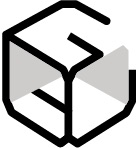

CHURCH INTRO
Jesus All
예수님이면 충분합니다.
예수님이 나를 사랑하시니 충분합니다.
예수님이 나를 아시니 충분합니다.
예수님이 나와 함께하시니 충분합니다.
복음창고교회는
이 복음을 붙들고 살아가는 교회입니다.
예배당을 넘어 삶의 자리로
복음창고교회는 선교적 교회입니다
예배당 안에 머무는 신앙이 아니라,
가정과 일터, 삶의 관계 속에서
복음을 살아내는 삶의 예배를 지향하며,
열방을 향한 하나님의 마음을 품고
선교에 동참하는 공동체입니다.
복음을 함께 살아가는 공동체
우리는 날마다 복음이 필요한 사람들입니다.
예배와 기도로 나아가기를 힘쓰고,
말씀을 삶으로 살아내기 위해 씨름하며,
하나님께 받은 은혜를 세상에 흘려보내며 살아갑니다.
완벽한 사람들이 아니라,
복음으로 살아가기를
소망하는 사람들이
함께 모여 있습니다.
복음창고교회
GOSPEL STORAGE
엔진
청년부
퓨즈
유초등부
오일
유아부
기억
중년부
복음창고교회
GOSPEL STORAGE
엔진
청년부
퓨즈
유초등부
오일
유아부
기억
중년부
로고의 의미
십자가복음의 중심
예수 그리스도
예수 그리스도
원 (순환)복음의 확장
세상으로 보내심
세상으로 보내심
복음창고교회
GOSPEL STORAGE CHURCH
창고복음을 품고
세상에 흘려보내는 공간
세상에 흘려보내는 공간
사람복음을 살아내는
공동체
공동체
성도의 한줄
복음을 함께 살아가는 이야기
“
{{ slide.heading }}
{{ slide.body }}
{{ slide.attr }}
예배 안내
주 일주일예배오전 10:50
유아 · 유치부오전 10:50
아동부오전 10:50
청소년부오후 2:00
수요예배오후 7:30
새벽예배 (월–금)오전 5:30